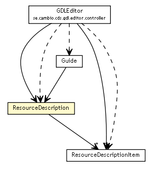

se.cambio.cds.gdl.model
Class ResourceDescription

java.lang.Object
 se.cambio.cds.gdl.model.ResourceDescription
se.cambio.cds.gdl.model.ResourceDescription
public class ResourceDescription
- extends Object
ResourceDescription
- Author:
- rong.chen
ResourceDescription
public ResourceDescription()
hashCode
public int hashCode()
- Overrides:
hashCode in class Object
equals
public boolean equals(Object obj)
- Overrides:
equals in class Object
getOriginalAuthor
public Map<String,String> getOriginalAuthor()
- Returns:
- the originalAuthor
setOriginalAuthor
public void setOriginalAuthor(Map<String,String> originalAuthor)
- Parameters:
originalAuthor - the originalAuthor to set
getOtherContributors
public List<String> getOtherContributors()
- Returns:
- the otherContributors
setOtherContributors
public void setOtherContributors(List<String> otherContributors)
- Parameters:
otherContributors - the otherContributors to set
getLifecycleState
public String getLifecycleState()
- Returns:
- the lifecycleState
setLifecycleState
public void setLifecycleState(String lifecycleState)
- Parameters:
lifecycleState - the lifecycleState to set
getDetails
public Map<String,ResourceDescriptionItem> getDetails()
- Returns:
- the details
setDetails
public void setDetails(Map<String,ResourceDescriptionItem> details)
- Parameters:
details - the details to set
getResourcePackageUri
public String getResourcePackageUri()
- Returns:
- the resourcePackageUri
setResourcePackageUri
public void setResourcePackageUri(String resourcePackageUri)
- Parameters:
resourcePackageUri - the resourcePackageUri to set
getOtherDetails
public Map<String,String> getOtherDetails()
- Returns:
- the otherDetails
setOtherDetails
public void setOtherDetails(Map<String,String> otherDetails)
- Parameters:
otherDetails - the otherDetails to set
Copyright © 2013 Cambio. All Rights Reserved.